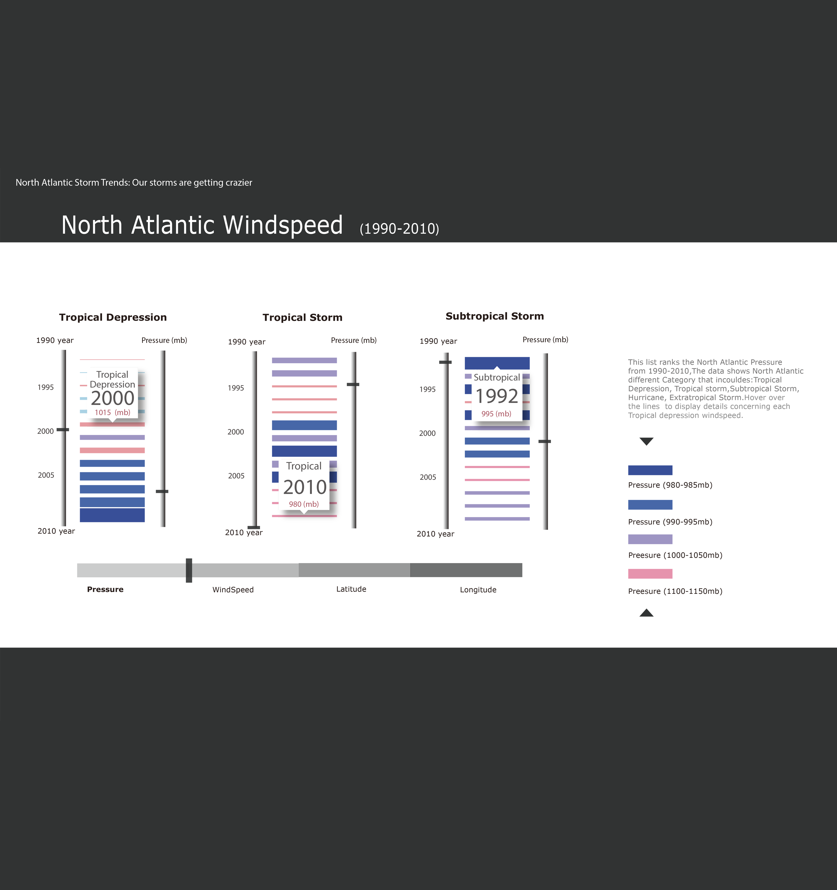
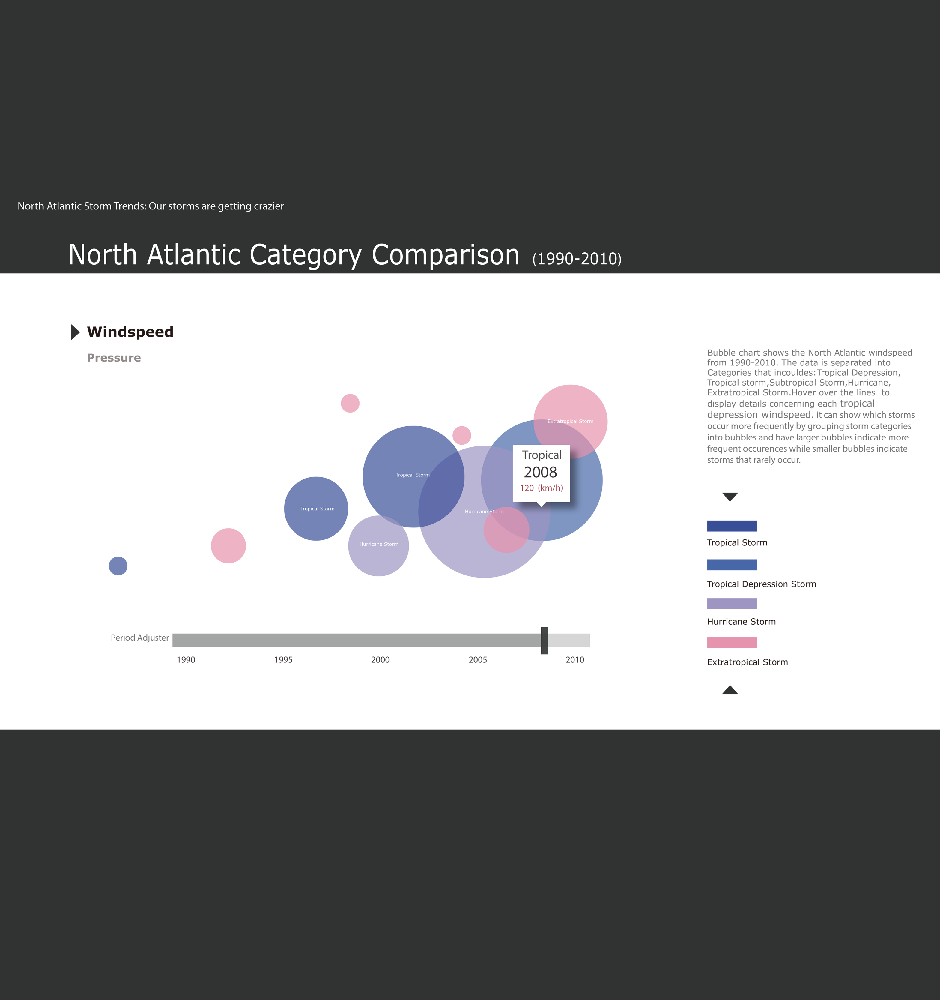

North Atlantic Storm Digital Infographic
Uses the dataset to illustrate how many storms has occurred in North Atlantic since 1990-2010 including Name, Year, Latitude, Longitude, Windspeed, Pressure, and Category
Part 1: X axis represents month
Part 2: Y represents windspeed (on the left side)
Part 3: Y represents years (from 1990-2010 on the right side)
Part 4: information board (once your mouse stop moving, then the information board will indicate all the information : year / month / windspeed, the red line will only show on mouse over to facilitate finding converging information and also included year )
Sketch

Final Design

